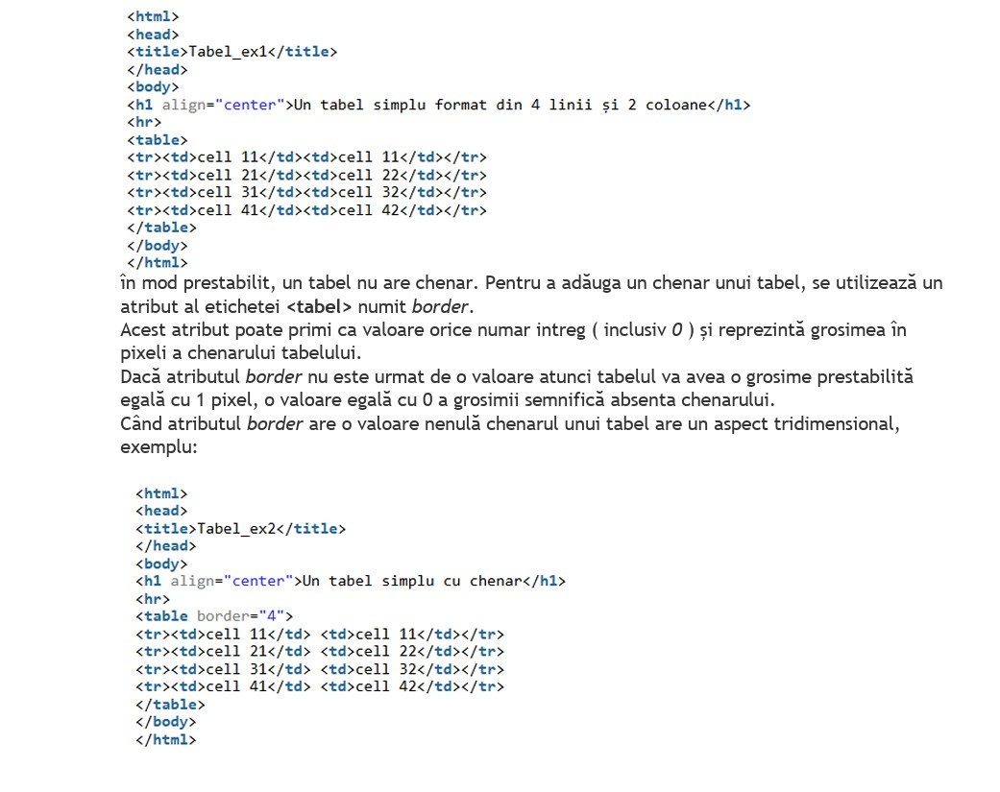
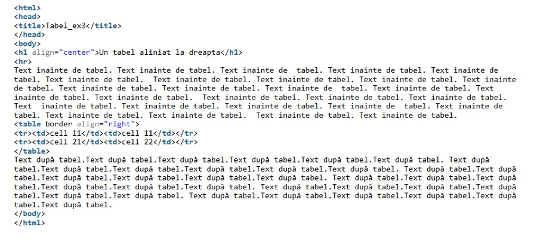
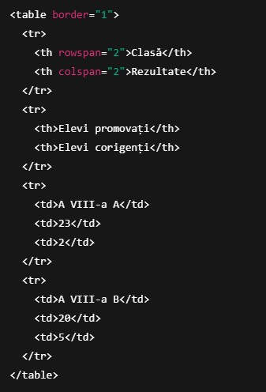

Tabele în HTML
HTML folosește tagul <table> pentru a crea tabele. Un tabel este alcătuit din rânduri (<tr>) și celule (<td> sau <th>).
1. Tabel simplu
Un tabel cu 2 rânduri și 3 coloane:
| Nume |
Vârstă |
Oraș |
| Maria |
25 |
București |
| Ion |
30 |
Cluj |
2. Celule care se întind pe mai multe coloane (colspan)
| Date personale |
| Nume: |
Andrei Pop |
3. Celule care se întind pe mai multe rânduri (rowspan)
| Materie |
Matematică |
| Informatică |
4. Tabel mai complex
| Produs |
Preț |
Cantitate |
| Pâine |
5 lei |
2 |
| Lapte |
6 lei |
1 |
| Total |
3 |
5. Rezumat
<table> – începe un tabel<tr> – definește un rând<td> – definește o celulă normală<th> – definește o celulă de antet (apare cu text bold și centrat implicit în browser)border="1" – adaugă contur tabelului (doar pentru exemplu simplu, în practică se folosește CSS)colspan – întinde o celulă pe mai multe coloanerowspan – întinde o celulă pe mai multe rânduri
Explicatii

Aliniere Exemplu

Rowspan&Colspan Exemple
